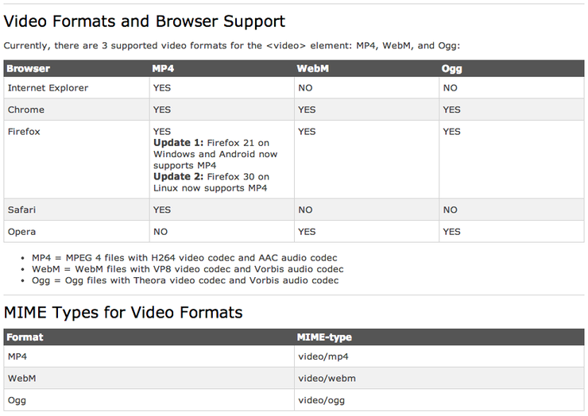

HTML5 Video <video>태그
0. 브라우즈 지원
Browser Support


Internet Explorer 9+, Firefox, Opera, Chrome, and Safari support the <video> element.
Note: Internet Explorer 8 and earlier versions, do not support the <video> element.
1. <video> 태그는 웹브라우즈에서 동영상을 재생해 준다
- <!DOCTYPE html>
- <html>
- <body>
-
- <video width="320" height="240" controls>
- <source src="./bm.mp4" type="video/mp4">
- <!--<source src="./movie.ogg" type="video/ogg">-->
- </video>
-
- </body>
- </html>
2. 현재 브라우즈마다 지원형식이 다르다
